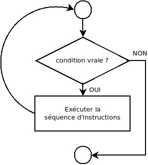

Le « tant que » est une structure
qui demande à l’exécutant de répéter une tâche (une ou
plusieurs instructions) tant qu’une condition donnée est vraie.
En pseudo-code :
tant que condition faire
séquence d’instructions à exécuter
fin tant que
La condition est une expression délivrant un résultat booléen (vrai ou faux).
Il faut qu’il y ait dans la séquence d’instructions comprise entre tant que
et fin tant que au moins une instruction qui
modifie une des composantes de la condition
de telle manière qu’elle puisse devenir fausse à un moment donné. Dans le cas contraire,
la condition reste indéfiniment vraie et la boucle va tourner sans fin, c’est ce qu’on appelle
une boucle infinie.
Si la condition est fausse dès le début, la tâche n’est jamais exécutée.

Par exemple :
On affiche uniquement les nombres inférieurs (pas strictement) à 10 .
// Affiche les nombres de 1 à 10.
algorithme compterJusque10 () // version avec tant que
nb : entier
nb ← 1 // c’est le premier nombre à afficher
tant que nb ≤ 10 faire // c’est le premier nombre à afficher
afficher nb // on affiche la valeur de la variable nb
nb ← nb + 1 // on passe au nombre suivant
fin tant que
fin algorithme
Après chaque nombre, on demande à l’utilisateur s’il y a encore un nombre à additionner.
// Lit des valeurs entières et retourne la somme des valeurs lues.
algorithme sommeNombres() → entier
valeur : entier // un des termes de l’addition
somme : entier // la somme
somme ← 0
demander valeur
tant que valeur ≥ 0 faire
somme ← somme + valeur
demander valeur // remarquer l’endroit où on lit une valeur.
fin tant que
retourner somme
fin algorithme